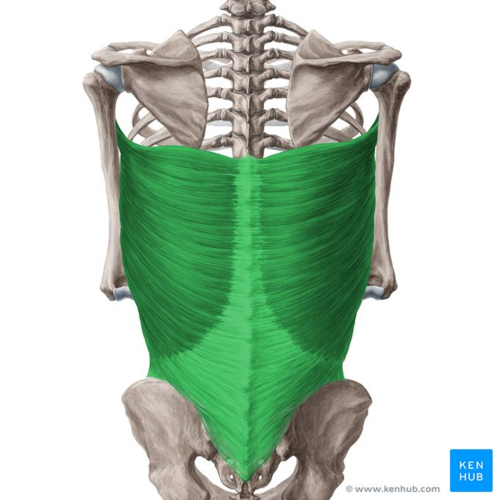
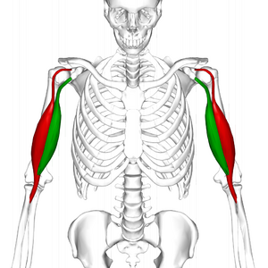

Targeted Fitness
Pull Day
Lets grow those lats and biceps!
Upper Back
Description: Back muscles are large and complex, which leads to there being three muscle types; superficial, intermediate, and deep.
In bodybuilding, the emphasis is on the superficial back muscles, as they are the most visible and contribute most to aesthetics. These muscles primarily function to control and move the scapula during upper body movements.
Muscle parts: The Back contains many muscles, these include the: Trapezius, Rhomboid Major, Rear Delt, and Teres Major/Minor.
Source: Physiopedia
Workouts By Level
| Level |
Exercise |
Benefits |
Video |
| Beginner Workouts |
One-Arm Machine Row |
Easy and effective upper back workout, large range of motion, and safe. |
|
| Intermediate Workouts |
Machine T-Bar Row |
Upper back muscle isolation, safe, large range of motion, and less lowerback and bicep strain. |
|
| Advanced Workouts |
Bent Over Row |
A popular compound movement which hits every back muscle. |
|
Lats
Description: The Latissimus Dorsi (lat) is a large flat muscle that that covers most of the mid and lower back. The lat is mainly an accessory muscle that helps with upperbody movements such as pulling, and shoulder joint internal rotations.
Muscle parts: The Lat is one large muscle, and is not comprised of multiple smaller ones.

Source: Physiopedia
Workouts By Level
| Level |
Exercise |
Benefits |
Video |
| Beginner Workouts |
Supinated Pull Down |
Easy, effective, safe, and can be done with one or both arms. |
|
| Intermediate Workouts |
Lat Pull Down |
Very popular, Improved range of motion, builds muscle stability. |
|
| Advanced Workouts |
Weighted Pull Ups |
No machine needed, builds functional strength and body control. |
|
Biceps
Description: The biceps brachii (biceps), is a large muscle on the front of the upper arm.
Muscle parts: The biceps have two muscle heads, these include the: Short Head (Green), and Long Head(Red).

Source:
Physiopedia
Workouts By Level
| Level |
Exercise |
Benefits |
Video |
| Beginner Workouts |
Standing Barbell Curl |
Easy, effective, safe, and hand placement can change targeted muscle heads. |
|
| Intermediate Workouts |
Preacher Hammer Curls |
Targets the brachialis (a muscle under the biceps) which makes the biceps appear larger. Great isolation exercise. |
|
| Advanced Workouts |
Spider Curls |
Great isolation, large range of motion, and constant tension throughout the movement. |
|